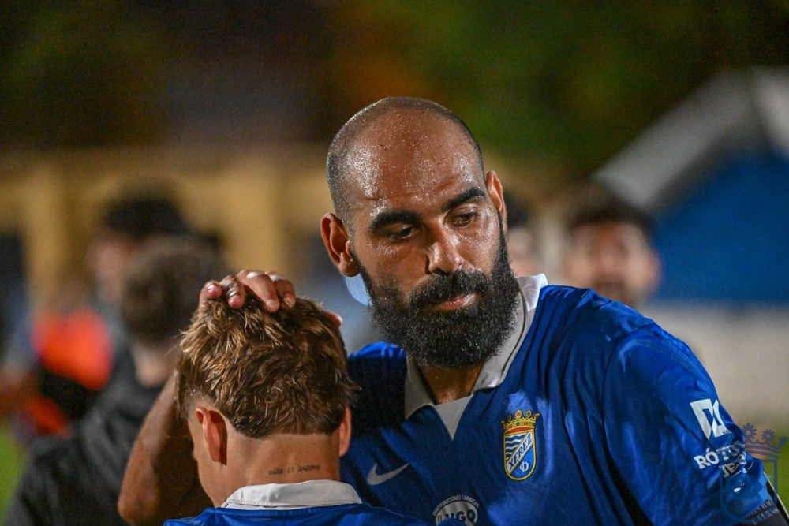

Fali será operado de una rotura compleja del menisco externo

Foto: Diario XerecistaEl parte médico del Xerez CD confirma que el central sufre una rotura compleja del cuerno posterior del menisco externo, que afecta a las dos superficies del menisco. El jugador, de 33 años, pasará por el quirófano y estará de baja entre ocho y doce semanas.
El club ha detallado el alcance de la lesión que Fali sufrió el sábado en el último entrenamiento antes del partido ante el Atlético Central y que le obligó a abandonar el terreno de juego. Las primeras pruebas médicas han confirmado una rotura compleja del cuerno posterior del menisco externo. Los servicios médicos del Xerez concretarán el tipo de intervención.
Artroscopia: coser o recortar
En este tipo de lesiones, la decisión se toma cruzando la resonancia magnética con los objetivos de la temporada. Lo habitual es una artroscopia, con dos opciones: coser el menisco (sutura) o retirar solo la parte dañada (meniscectomía parcial). El objetivo es preservar al máximo la rodilla y alargar la carrera del jugador sin comprometer su rendimiento.
La elección no es menor. La sutura conserva el menisco, que en el lado externo es clave para la estabilidad de la rodilla, pero exige una recuperación más larga y cicatriza peor cuando el tejido ya tiene desgaste, algo habitual pasados los 30 años. Por eso, en futbolistas de la edad de Fali es frecuente optar por la meniscectomía parcial, que permite volver antes. El tratamiento sin cirugía solo se contempla cuando la rotura es estable, pequeña y no da síntomas en el campo.
Baja hasta enero o febrero
Con una baja de entre ocho y doce semanas, Fali podría volver entre mediados de enero y mediados de febrero. Se perdería, como mínimo, los seis partidos que quedan hasta la jornada 18, ante el Estepona en Chapín, y como máximo, hasta la jornada 22, en el campo del Don Benito. El Xerez recibe este domingo al Linares Deportivo, a las 18:00, sin el central valenciano.
🇬🇧 Read in English ← Volver a la portada